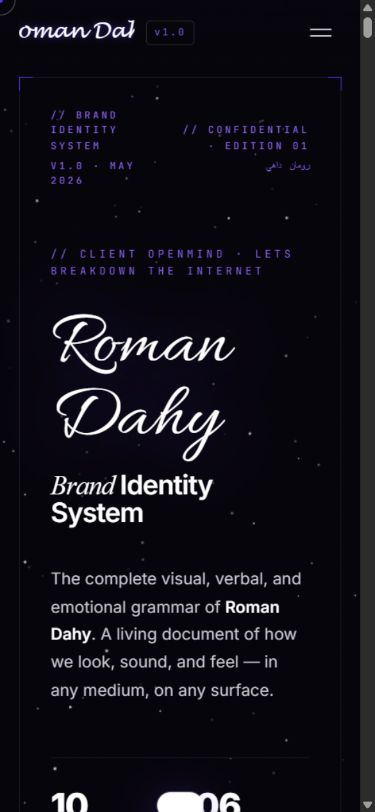
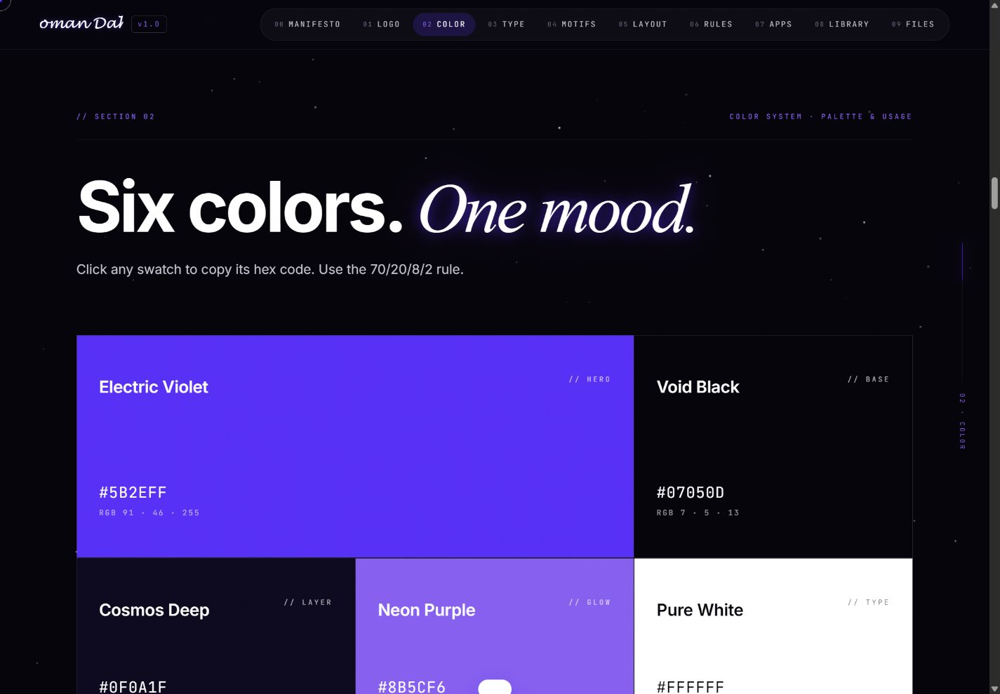

A browsable identity library
Numbered sections connect the logo, colour, typography and applications.
UI & design systems
An interactive brand-guidelines experience organised as a digital reference library.
The system connects identity, colour, typography, composition and applications through a numbered navigation structure.
HTML5 / CSS3 / JavaScript / Canvas 2D / jsPDF / Intersection Observer
Numbered sections connect the logo, colour, typography and applications.
Canvas 2D supports the background and visual export tools.
jsPDF is used by the client-side PDF export interface.


